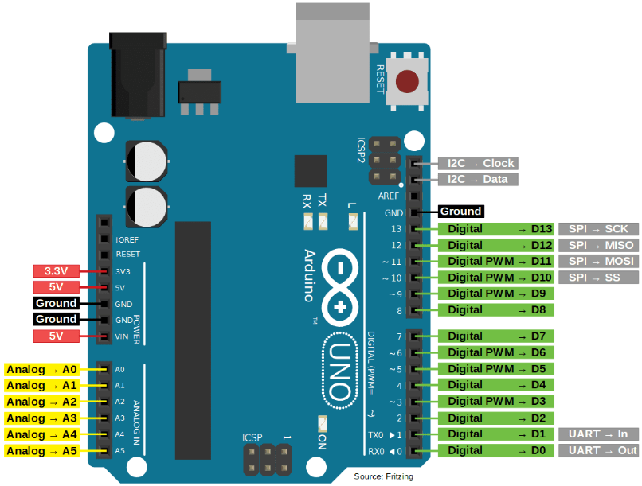

📟 Arduino Uno - Pinout Completo
Diagrama de distribución de pines y especificaciones técnicas del Arduino Uno
Diagrama de Pines

Especificaciones Técnicas
Microcontrolador
- Chip: ATmega328P
- Voltaje de operación: 5V
- Voltaje de entrada (recomendado): 7-12V
- Voltaje de entrada (límite): 6-20V
Entradas/Salidas Digitales
- Pines I/O digitales: 14 (D0-D13)
- Pines PWM: 6 (D3, D5, D6, D9, D10, D11)
- Corriente máxima por pin I/O: 20 mA
- Corriente máxima pin 3.3V: 50 mA
Entradas Analógicas
- Pines analógicos: 6 (A0-A5)
- Resolución ADC: 10 bits (0-1023)
- Voltaje de referencia: 5V (por defecto)
Memoria
- Flash Memory: 32 KB (0.5 KB usado por bootloader)
- SRAM: 2 KB
- EEPROM: 1 KB
Comunicación
- UART: 1 (pines 0 RX, 1 TX)
- SPI: Sí (pines 10 SS, 11 MOSI, 12 MISO, 13 SCK)
- I2C/TWI: Sí (pines A4 SDA, A5 SCL)
Otros
- Frecuencia de reloj: 16 MHz
- LED integrado: Pin 13
- Conexión USB: USB-B
- Conector de alimentación: Jack DC 2.1mm
Tabla de Pines Detallada
| Pin | Función Principal | Funciones Alternativas | Notas |
|---|---|---|---|
| D0 | I/O Digital | RX (UART) | Evitar uso durante comunicación serial |
| D1 | I/O Digital | TX (UART) | Evitar uso durante comunicación serial |
| D2 | I/O Digital | INT0 (Interrupción externa) | Puede usarse para interrupciones |
| D3 | I/O Digital | PWM, INT1 | Salida PWM disponible |
| D4-D7 | I/O Digital | - | Uso general |
| D8 | I/O Digital | - | Uso general |
| D9 | I/O Digital | PWM | Salida PWM disponible |
| D10 | I/O Digital | PWM, SS (SPI) | Chip Select para SPI |
| D11 | I/O Digital | PWM, MOSI (SPI) | Master Out Slave In para SPI |
| D12 | I/O Digital | MISO (SPI) | Master In Slave Out para SPI |
| D13 | I/O Digital | PWM, SCK (SPI), LED | LED integrado conectado |
| A0-A5 | Entrada Analógica | I/O Digital | También pueden usarse como pines digitales |
| A4 | Entrada Analógica | SDA (I2C) | Línea de datos I2C |
| A5 | Entrada Analógica | SCL (I2C) | Línea de reloj I2C |
⚠️ Advertencias Importantes
- No exceder 5V en los pines I/O
- Corriente máxima total de todos los pines: 200 mA
- Los pines 0 y 1 se usan para programación USB, evitar interferencias
- El pin 13 tiene un LED integrado que puede afectar su uso
💡 Tips de Uso
- Usar resistencias pull-up/pull-down para entradas digitales
- Los pines analógicos también funcionan como digitales (D14-D19)
- PWM útil para control de LEDs y motores
- AREF permite voltaje de referencia externo para ADC